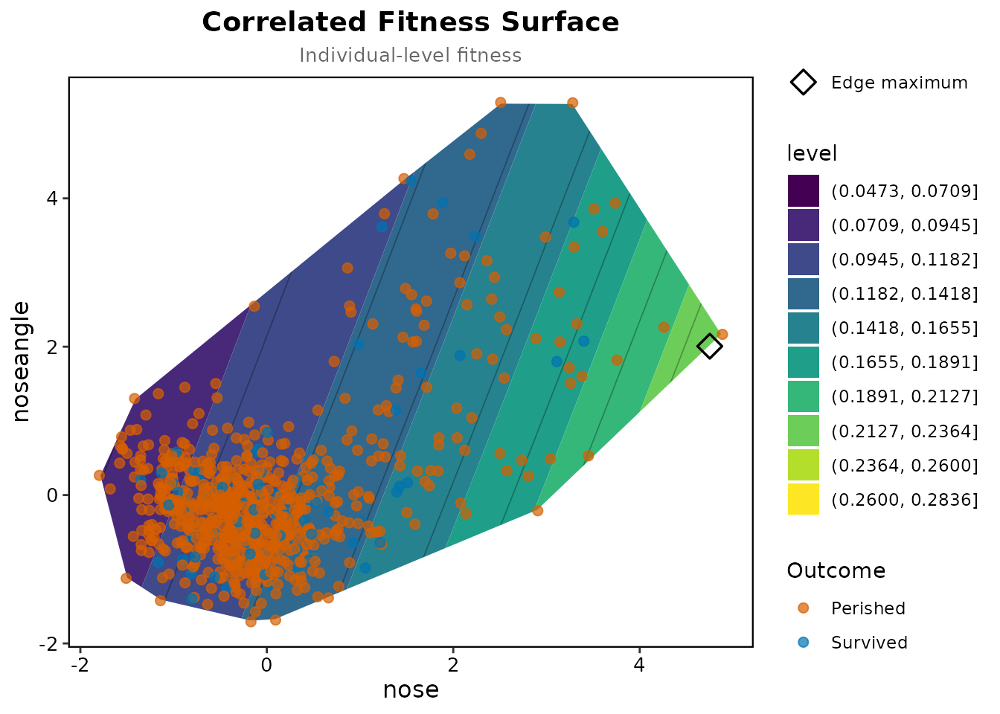
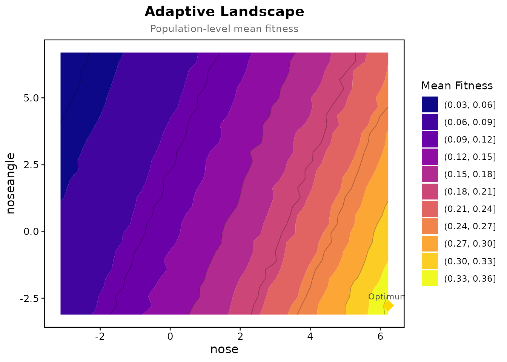

Martin (2016) released laboratory-reared hybrids of the three
Cyprinodon pupfish species of San Salvador Island into field
enclosures in two lakes and recorded survival over three months; Martin
and Wainwright (2013) describe the experiment. The package has the
survival data and trait scores for each lake as
crescent_pond_pupfish and little_lake_pupfish,
already standardised within lake; ?crescent_pond_pupfish
describes the columns. They also hold the low-density enclosures and
laboratory-reared fish of the three parental species, but Martin’s
analyses use the high-density enclosures only, 796 fish in Crescent Pond
and 875 in Little Lake, so we keep to those. The traits are the six
functional traits of Martin’s Table 3: lower jaw length
(jaw), upper jaw length (pmx), nasal
protrusion (nose), nasal angle (noseangle),
body depth (body) and orbit diameter
(eye).
library(Lande)
crescent <- crescent_pond_pupfish[crescent_pond_pupfish$density == "H", ]
little <- little_lake_pupfish[little_lake_pupfish$density == "H", ]
traits <- c("jaw", "pmx", "nose", "noseangle", "body", "eye")
c(crescent = nrow(crescent), little = nrow(little))## crescent little
## 796 875Gradients in each lake
cp <- selection_report(crescent, "survival", traits, fitness_type = "binary")
cp[cp$Type == "Linear", ]## Selection analysis (standardised traits, relative fitness)
## Fitness type: binary
##
## Term Type Estimate Std_Error P_Value Sig
## jaw Linear -0.1086 0.1895 0.5595
## pmx Linear 0.4895 0.2074 0.0180 *
## nose Linear 0.3580 0.1359 0.0082 **
## noseangle Linear -0.0727 0.1214 0.5227
## body Linear 0.2676 0.1485 0.0615 .
## eye Linear -0.1245 0.1326 0.3670
##
## Signif: *** 0.001 ** 0.01 * 0.05 . 0.1In Crescent Pond survival rose with upper jaw length and nasal protrusion.
ll <- selection_report(little, "survival", traits, fitness_type = "binary")
ll[ll$Type == "Linear", ]## Selection analysis (standardised traits, relative fitness)
## Fitness type: binary
##
## Term Type Estimate Std_Error P_Value Sig
## jaw Linear 0.0400 0.1185 0.7245
## pmx Linear 0.2025 0.1603 0.2032
## nose Linear 0.0343 0.1287 0.7986
## noseangle Linear 0.0842 0.1372 0.5785
## body Linear 0.4279 0.1267 0.0008 ***
## eye Linear 0.1306 0.1083 0.1998
##
## Signif: *** 0.001 ** 0.01 * 0.05 . 0.1In Little Lake survival rose with body depth and nothing else stands out.
The nasal traits in Crescent Pond
Nasal protrusion and nasal angle are one of Martin’s functional modules.
nasal <- c("nose", "noseangle")
prep <- prepare_selection_data(crescent, "survival", nasal)
surface <- correlated_fitness_surface(prep, "survival", nasal, grid_n = 50)
plot_correlated_fitness_enhanced(surface, nasal, original_data = prep, fitness_col = "survival")
The surface is drawn only within the convex hull of the fish; the highest fitted survival sits at the edge of the data, among the fish with the largest nasal protrusion.
land <- adaptive_landscape(prep, surface$model, nasal, grid_n = 30, simulation_n = 200)
plot_adaptive_landscape(land, nasal)
Mean fitness keeps rising past that edge, so within the range of the data the landscape is a slope rather than a peak, and the package reports it as such.
Curvature against Martin’s Table 3
Martin fitted a spline to each trait and reported how curved it was: upper jaw length and body depth curved in Crescent Pond, every trait close to straight in Little Lake. Here are the effective degrees of freedom of the univariate spline for each trait, with the default GCV smoothing and with REML.
edf <- function(d, trait, smoothing) {
prep <- prepare_selection_data(d, "survival", trait)
summary(univariate_spline(prep, "survival", trait, smoothing = smoothing)$model)$edf
}
round(rbind(
crescent_gcv = sapply(traits, edf, d = crescent, smoothing = "GCV.Cp"),
crescent_reml = sapply(traits, edf, d = crescent, smoothing = "REML"),
little_gcv = sapply(traits, edf, d = little, smoothing = "GCV.Cp"),
little_reml = sapply(traits, edf, d = little, smoothing = "REML")
), 2)## jaw pmx nose noseangle body eye
## crescent_gcv 1.83 3.88 1.81 6.18 4.14 1.76
## crescent_reml 2.03 3.39 2.00 1.02 1.00 1.95
## little_gcv 1.64 6.85 1.00 7.44 1.52 1.00
## little_reml 1.80 1.00 1.00 1.00 1.67 1.00GCV agrees with his pattern for nine of the twelve. Nasal angle in both lakes and upper jaw length in Little Lake come out wiggly with GCV and straight with REML, as in his table; REML in turn leaves body depth in Crescent Pond straight, which he found strongly curved.